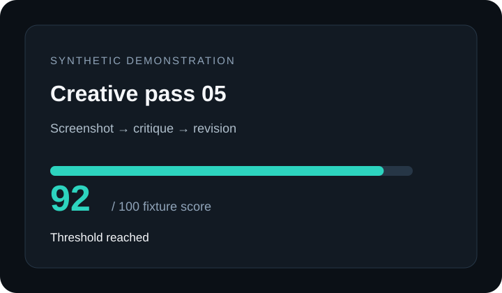
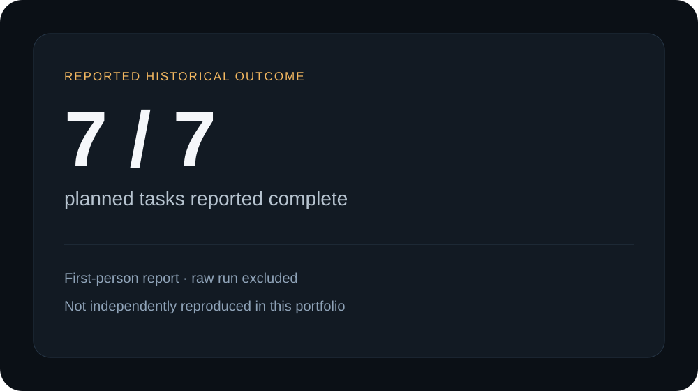
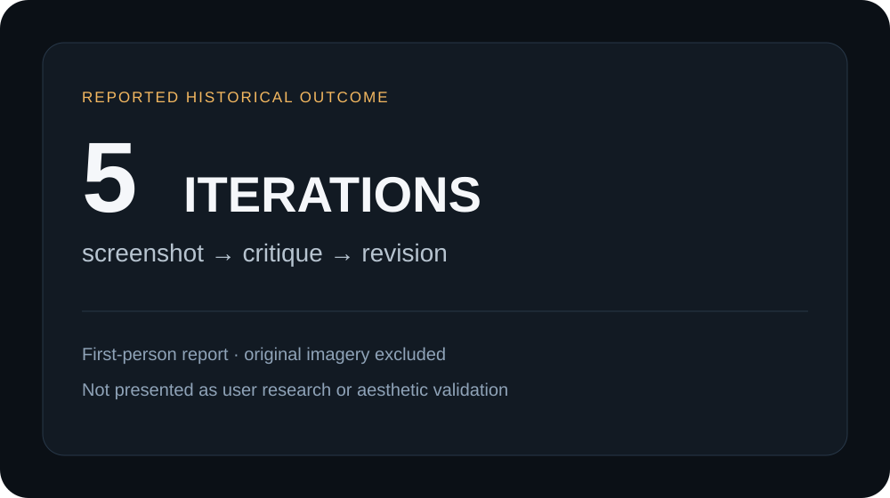

Freeze intent
Validate relative paths, dependencies, budgets, and stop conditions. Persist the accepted brief unchanged.
Portable closure · synthetic demonstration
Nightwatch turned a human brief into bounded agent work, recoverable attempts, explicit handoffs, fresh-context review, visual iterations, and a morning evidence package.
The thesis
Queues and retries address operational failure. Agent work adds semantic failure: a successor over-trusts a handoff, a stale page looks convincing, or output lands in the wrong workspace.
My intervention joined ordinary controller state with intent-preservation boundaries.
The system
The packaged implementation resolves the old split between watcher, direct orchestrator, and operator documentation. State changes happen in one deterministic controller; the runner only executes a bounded task.
Validate relative paths, dependencies, budgets, and stop conditions. Persist the accepted brief unchanged.
Claim explicit queue state. Record worker heartbeat, timeout, failure, retry, and final status.
Persist declared artifacts and a schema-valid handoff without replacing the original brief.
Give an independent reviewer the brief, artifacts, and handoff—but no predecessor conversation.
End in a morning summary and explicit acceptance gate, never automatic publication.
Deterministic control plane
Atomic individual writes make state inspectable. Cross-file crash recovery remains an explicit limitation.
Pluggable execution
Pi can become the worker transport. It does not become Nightwatch's scheduler, durable store, or sandbox.
Recovery evidence
The fixture deliberately includes two different failure paths. Success does not erase either attempt.
Transient failure
running → failed → retry_wait → queued
Bounded timeout
running → timed_out → retry_wait → queued
Separate signals replace the old assumption that one watcher PID proved both.
Semantic continuity
The successor must reconcile the predecessor's record with the immutable original objective. The fresh reviewer inherits evidence without inheriting conversation momentum.
Immutable source
Objective, allowed paths, task graph, limits
Structured evidence
Completed work, next step, artifacts, risks
Fresh-context boundary
Screenshot-based creative loop
Five local SVG cards exercise the historical screenshot → critique → revision pattern. Scores are fixture inputs for loop control—not aesthetic judgment.

Evidence ledger
Private runs were not opened. Historical cards use only the aggregate outcomes included for publication and never stand in for reproducible evidence.
Reproduced here
Reported historical
Supervised external smoke · synthetic input
openai-codex/gpt-5.6-luna recovered from one deliberate process termination, persisted a handoff, and launched a no-session reviewer that made one recorded artifact-read call.


What shaped Crab/Pi
The case study keeps the failures because they explain why harness-native lifecycle, explicit paths, browser verification, and context boundaries mattered later.
A living process did not prove supervisor or worker progress.
Separate lifecycle signals.Machine roots and prefix checks could target the wrong workspace.
Validate at the tool boundary.A convincing screenshot could come from the wrong running revision.
Verify the observed runtime.Continuation could preserve activity while losing the objective.
Keep brief + fresh review.Category honesty
| System | Primary promise | Durability layer | Agent-specific contribution |
|---|---|---|---|
| Temporal | General durable workflows | Service + event history | Application-defined |
| Hatchet | Durable tasks and AI workflows | Postgres-backed platform | Workers, workflows, observability |
| Nightwatch | Bounded local overnight operation | Inspectable filesystem records | Brief retention, handoff, fresh review, visual loop |
Hard boundaries
A fixture state machine does not demonstrate arbitrary software engineering.
No database, event replay, leases, or multi-host recovery.
Allowed paths validate Nightwatch writes; they cannot confine a host process.
One controlled recovery/handoff succeeded; no uncontrolled outage, code implementation, customer, production, adoption, or revenue evidence.
Release status
Attribution, evidence wording, repository settings, final claims, and Apache-2.0 licensing are recorded. No site has been deployed.
python -m nightwatch demo --output evidence/synthetic-run --clean